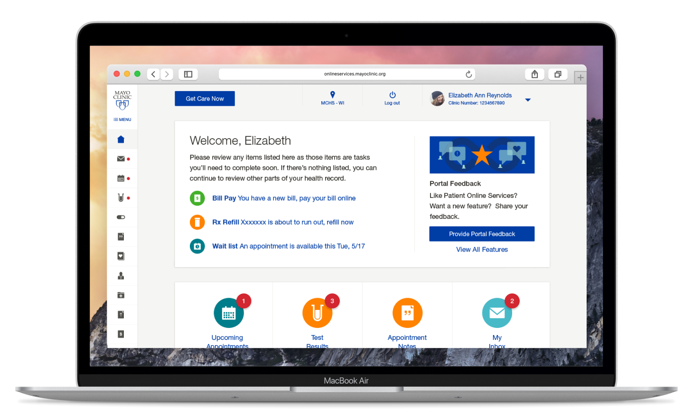
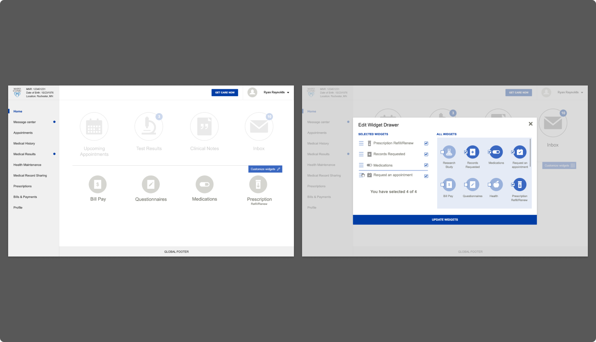
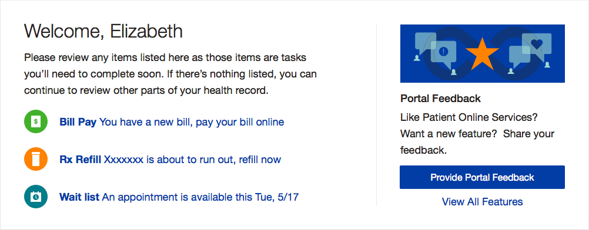
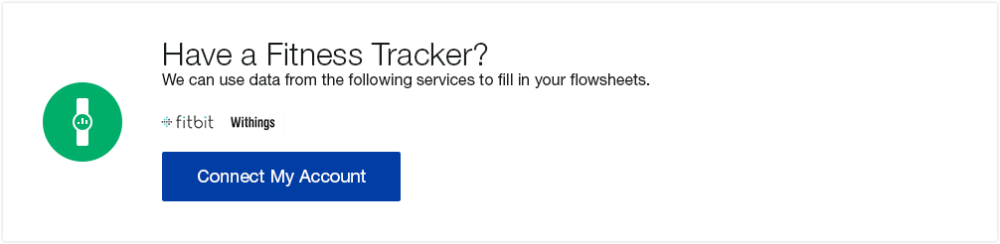
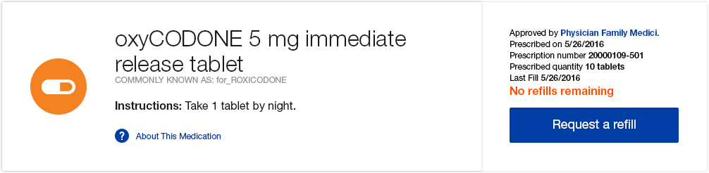
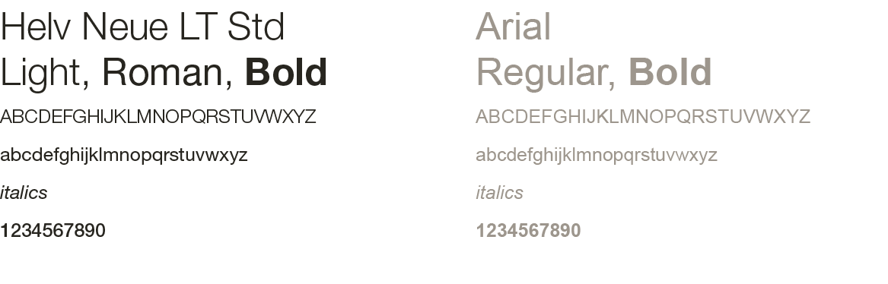
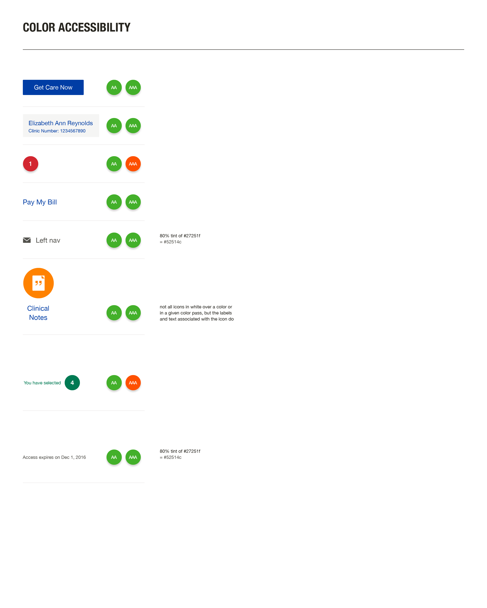
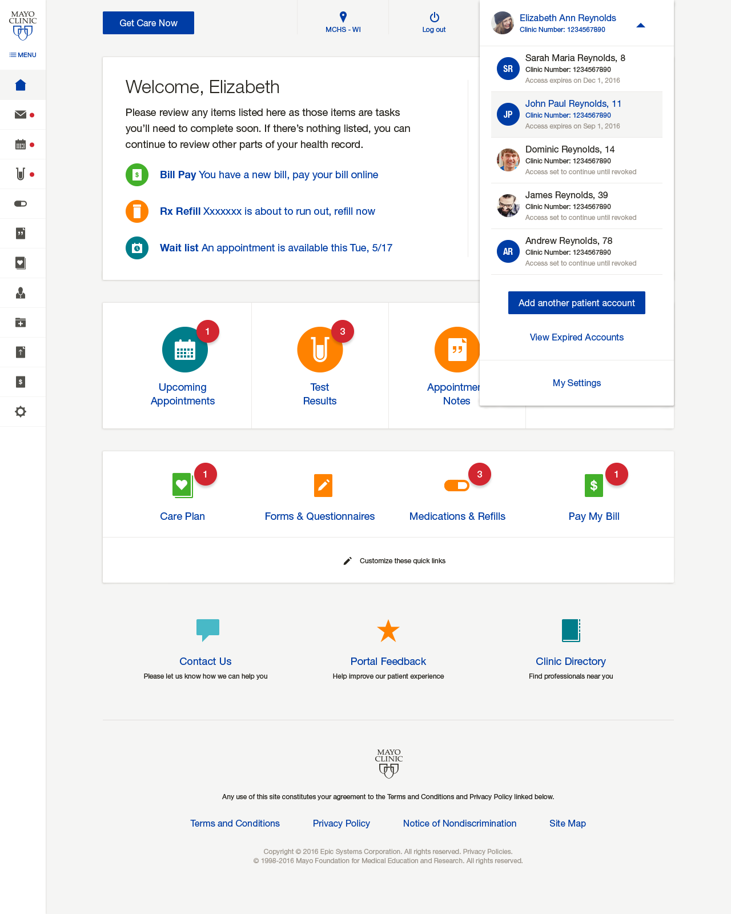

Mayo's Main Portal
Patient Online Services let you see your medical records and results, manage appointments, review your clinincal notes, use Mayo Clinic Express Care Online and more.



Project early stages
On the project early stages we made -a lot- of meetings and generate -hundreds- of wireframes.
Cards flexibility
On the main card of the Homepage, the feature on the right will change depending on the particular situation of the patient, eg: If the patient has a Care Plan and this has been recently updated or if their payment is soon to be expired. On the left, the items of the list will change depending on what will need patient's attention.
Other Main cards examples for My Care Plan and Medication & Refill section
 Proposed llustrations
Here are some of the proposed illustrations that will be shown on the right side of the main card in the landing page.
We also worked on some of the icons, following the Mayo's Design Guidelines.
Color and Accessibility
In accordance with health literacy best practices, each color, contrast or border was tested to guarantee accessibility and fonts used are simple and familiar to enhance readability.
Regardless user's age or condition, they will have the clearest and easiest experience possible.
 User permissions and roles visibility
At that time, one of the most complicated functionality that we come up with, maybe not only in design but code as well, was the caregiver/caretaker permissions and how to add and remove different roles to the users (i.e. a middle age person who have to take care of his dad).
Personally, this project was one of the most satisfying projects of my career, even if it wasn't the most eye-appealing project. Not only because it was health related, but because what Mayo Clinic represents, their commitment to cancer research and the most important thing, the lovely people that I've worked with.
Patient Online Services
Mayo Clinic - 2016
Involved from the early stages of the project, I worked on early wireframes, prototypes, illustrations, mailings, error messages and documentation, based on requirements and user journeys, previously discussed and refined with the client.
The main challenge of this project was to make the Home and main pages customizable and dinamic. To solve that, we proposed a site enclosed in cards and widgets, that give us the opportunity to show or hide information to the user, depending on permissions and context. This also gave the user the possibility to customize their own experience as well, as shown in the wireframes of the early stages.
What I did
- UX/UI Design